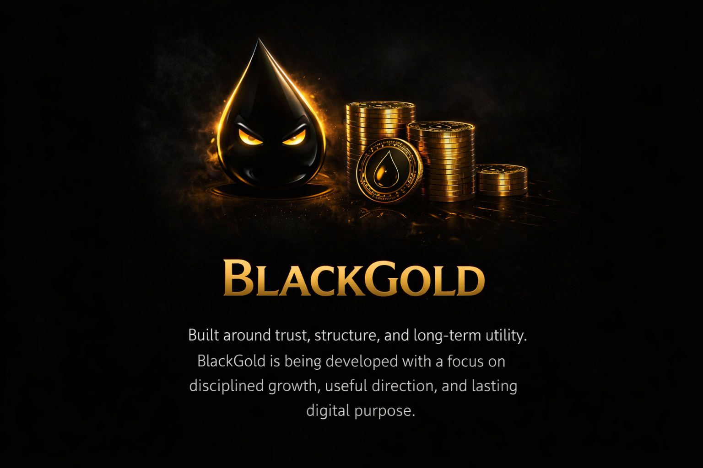

Long-term utility • Structured development • Access evolving over time
BlackGold is being built to evolve into an access-to-intelligence utility project focused on structured research, useful information, trust, and long-term utility rather than hype.
Foundation and Community Structure
Platform Refinement and Utility Layers
Access to Structured Intelligence / Research
Expansion of Utility and Ecosystem
BlackGold’s long-term direction centers on creating useful digital utility built around access, disciplined research, trust, and structured intelligence designed to serve lasting value over time.
BlackGold • Long-Term Utility • Structured Development